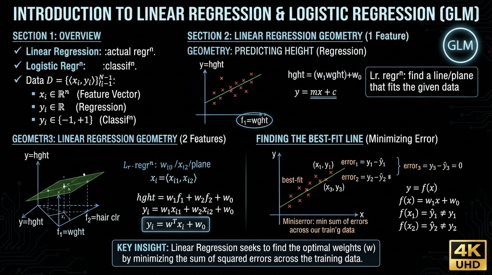
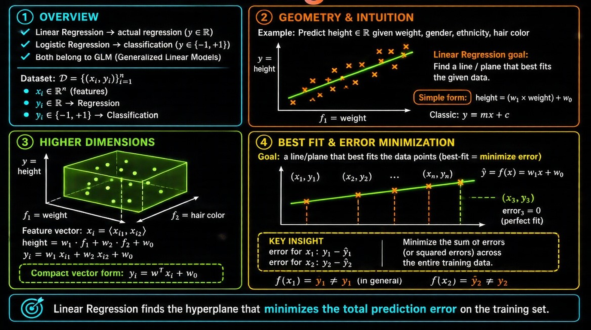
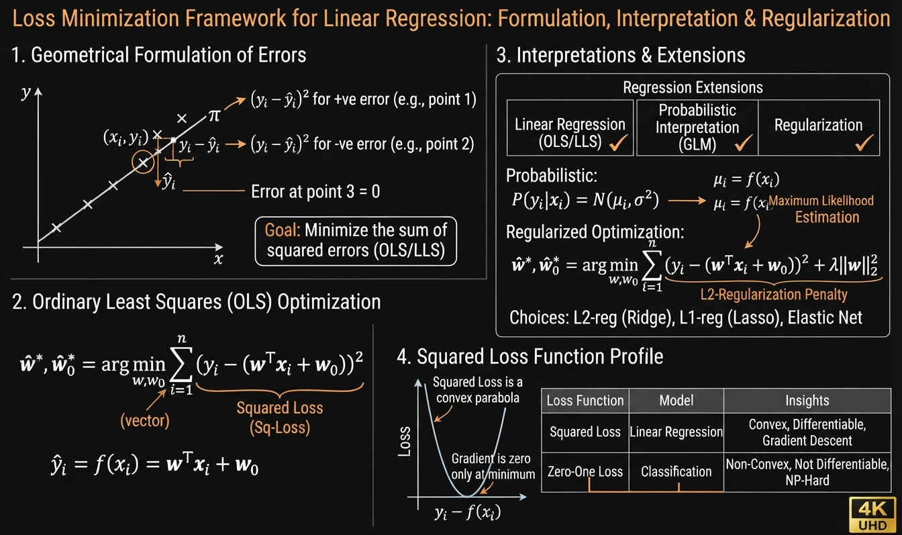
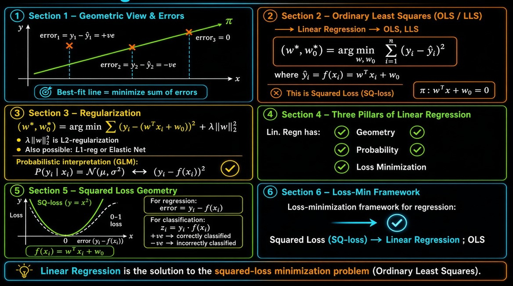
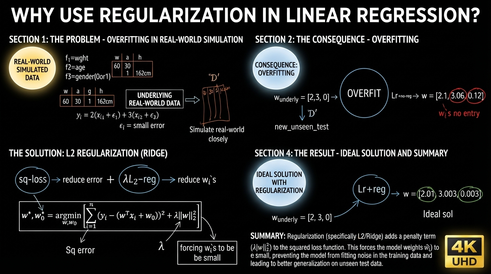
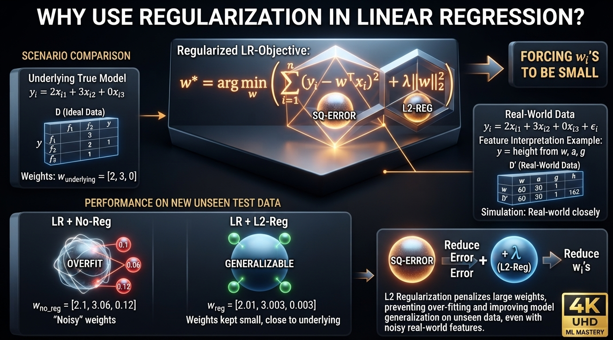
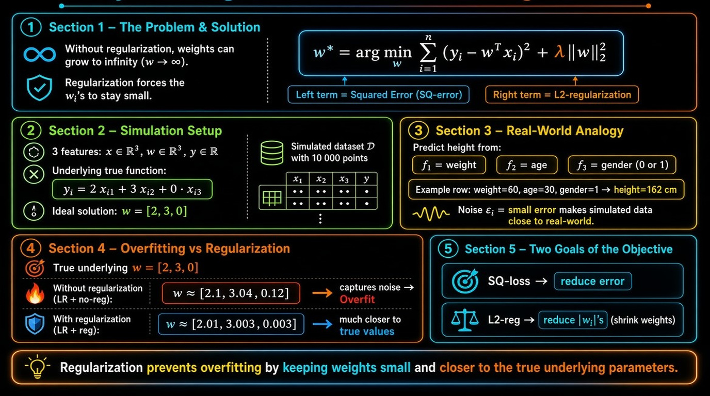
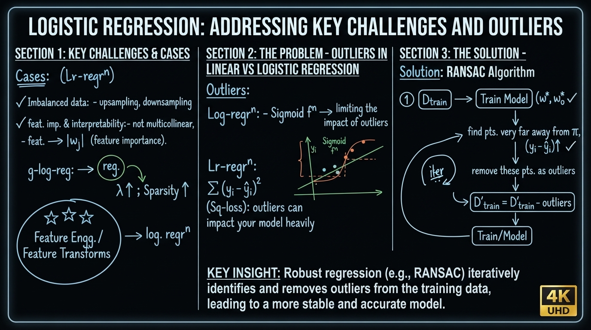
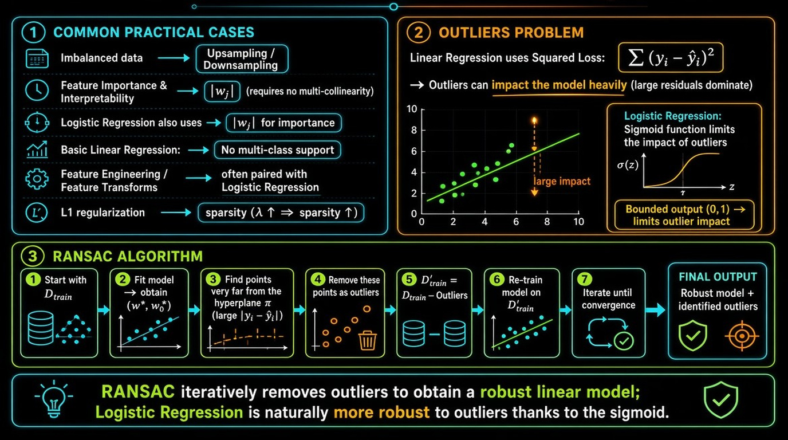

Linear Regression
01. Geometric Intuition of Linear Regression


Linear Regression
- Linear Regression → actual regression
- Logistic Regression → classification
Both belong to the family of Generalized Linear Models (GLM).
Dataset:
$$ \mathcal{D} = \{(\mathbf{x}_i, y_i)\}_{i=1}^n $$
- $\mathbf{x}_i \in \mathbb{R}^d$
- For regression: $y_i \in \mathbb{R}$
- For classification: $y_i \in \{-1, +1\}$
Geometry of Linear Regression
Example: Predict height ($y \in \mathbb{R}$) given weight, gender, ethnicity, hair color, etc.
Linear Regression finds a line / plane that best fits the given data.
In 1-D (only weight as feature):
$$ \text{height} = w_1 \cdot \text{weight} + w_0 $$
which is the familiar equation of a straight line:
$$ y = mx + c $$
In 2-D (weight and hair color):
$$ \mathbf{x}_i = \langle x_{i1}, x_{i2} \rangle $$
$$ \text{height} = w_1 f_1 + w_2 f_2 + w_0 $$
$$ y_i = w_1 x_{i1} + w_2 x_{i2} + w_0 $$
In vector form:
$$ y_i = \mathbf{w}^\top \mathbf{x}_i + w_0 $$
Goal
Find a line / plane that best fits the data points.
“Best fit” means minimize the error.
For a point $(x_1, y_1)$:
- Predicted value: $\hat{y}_1 = f(x_1) = w_1 x_1 + w_0$
- Error: $y_1 - \hat{y}_1$
We want to minimize the sum of errors across all training points.
02. Mathematical Formulation


Mathematical Formulation of Linear Regression
Errors can be positive or negative:
- $\text{error}_1 = y_1 - \hat{y}_1 = +ve$
- $\text{error}_2 = y_2 - \hat{y}_2 = -ve$
- $\text{error}_3 = 0$ (point lies on the line)
Best-fit line = minimize the sum of errors.
Ordinary Least Squares (OLS) / Linear Least Squares (LLS)
Linear Regression is also called OLS or LLS.
The hyperplane is:
$$ \pi:\ \mathbf{w}^\top \mathbf{x} + w_0 = 0 $$
Optimization problem:
$$ (\mathbf{w}^*, w_0^*) = \arg\min_{\mathbf{w}, w_0} \sum_{i=1}^{n} (y_i - \hat{y}_i)^2 $$
where
$$ \hat{y}_i = f(\mathbf{x}_i) = \mathbf{w}^\top \mathbf{x}_i + w_0 $$
This is the squared loss (Sq-loss).
Expanded form:
$$ (\mathbf{w}^*, w_0^*) = \arg\min_{\mathbf{w}, w_0} \sum_{i=1}^{n} \Big\{ y_i - (\mathbf{w}^\top \mathbf{x}_i + w_0) \Big\}^2 $$
Regularization
Just like Logistic Regression, we can add regularization:
$$ (\mathbf{w}^*, w_0^*) = \arg\min_{\mathbf{w}, w_0} \sum_{i=1}^{n} \Big\{ y_i - (\mathbf{w}^\top \mathbf{x}_i + w_0) \Big\}^2 + \lambda \|\mathbf{w}\|_2^2 $$
- L2-regularization is the most common.
- We can also use L1-regularization or Elastic-Net (same as in Logistic Regression).
Probabilistic Interpretation (GLM)
Linear Regression assumes:
$$ P(y_i \mid \mathbf{x}_i) = \mathcal{N}(\mu, \sigma^2) $$
The squared loss term $(y_i - f(\mathbf{x}_i))^2$ comes naturally from the Gaussian assumption.
Three Interpretations of Linear Regression
Same as Logistic Regression:
- Geometric interpretation
- Probabilistic interpretation (GLM)
- Loss-minimization interpretation
Loss-Minimization View
- Squared loss $\rightarrow$ parabola ($y = x^2$)
- 0-1 loss is for classification; squared loss is for regression.
For regression the residual is:
$$ y_i - f(\mathbf{x}_i) $$
For classification we used:
$$ z_i = y_i \cdot f(\mathbf{x}_i) $$
Summary of Loss-Min Framework for Regression
$$ \text{Squared Loss} \;\longrightarrow\; \text{Linear Regression (OLS)} $$
03. Need for Regularization in Linear Regression



Why use Regularization in Linear Regression?
The regularized objective is:
$$ \mathbf{w}^* = \arg\min_{\mathbf{w}} \sum_{i=1}^{n} \big(y_i - \mathbf{w}^\top \mathbf{x}_i\big)^2 + \lambda \|\mathbf{w}\|_2^2 $$
- First term → Squared error (wants to fit the data)
- Second term → L2-regularization (forces the $w_i$’s to be small)
Without regularization, weights can become very large ($\mathbf{w} \to \infty$).
Simulation Example
Suppose the true underlying relationship uses only 2 features:
$$ y_i = 2x_{i1} + 3x_{i2} + 0\cdot x_{i3} $$
Ideal solution:
$$ \mathbf{w} = [2,\ 3,\ 0] $$
We generate a simulated dataset $\mathcal{D}$ with 10 000 points and 3 features.
Real-world analogy
- $y$ = height
- $f_1$ = weight
- $f_2$ = age
- $f_3$ = gender (0 or 1)
In real data there is always small noise $\varepsilon_i$:
$$ y_i = 2x_{i1} + 3x_{i2} + 0\cdot x_{i3} + \varepsilon_i $$
What happens when we train
Without regularization (Linear Regression + no-reg):
$$ \mathbf{w} \approx [2.1,\ 3.06,\ 0.12] $$
The model tries to fit the noise and gives a non-zero weight to the irrelevant feature → overfitting.
With regularization (Linear Regression + reg):
$$ \mathbf{w} \approx [2.01,\ 3.003,\ 0.003] $$
The weights stay very close to the true underlying values $[2,\ 3,\ 0]$.
Summary
- Squared loss → tries to reduce error
- L2-regularization → tries to reduce the $w_i$’s
Regularization prevents the model from fitting noise and keeps the weights small, which improves generalization to unseen test data.
04. Real-World Cases


Cases for Linear Regression
Imbalanced Data
- Same as Logistic Regression → use Upsampling or Downsampling
Feature Importance & Interpretability
- Same condition as Logistic Regression: features should not be multicollinear
- Feature importance comes from $|w_j|$
- Regularization:
- L1-regularization → sparsity
- As $\lambda$ increases → sparsity increases
Multi-class
- Linear Regression has no direct multi-class capability (unlike Logistic Regression)
Feature Engineering / Feature Transforms
- Extremely important (same as in Logistic Regression)
- After good feature transforms we can apply Linear Regression
Outliers
Logistic Regression
- Sigmoid function limits the impact of outliers
Linear Regression
- Uses Squared Loss: $$ \sum_{i=1}^{n} (y_i - \hat{y}_i)^2 $$
- Outliers can impact the model heavily (large residuals get squared)
Handling Outliers in Linear Regression → RANSAC
- Train on $D_{\text{train}}$ → obtain $\mathbf{w}^*, w_0^*$
- Find points that are very far away from the hyperplane $\pi$
(i.e., points with large $|y_i - \hat{y}_i|$) - Remove these points as outliers
- Form cleaned dataset: $$ D'_{\text{train}} = D_{\text{train}} - \text{Outliers} $$
- Retrain the model on $D'_{\text{train}}$
- Iterate if needed
This procedure is known as RANSAC (Random Sample Consensus).
05. Code Sample for Linear Regression
LinearRegression.ipynb